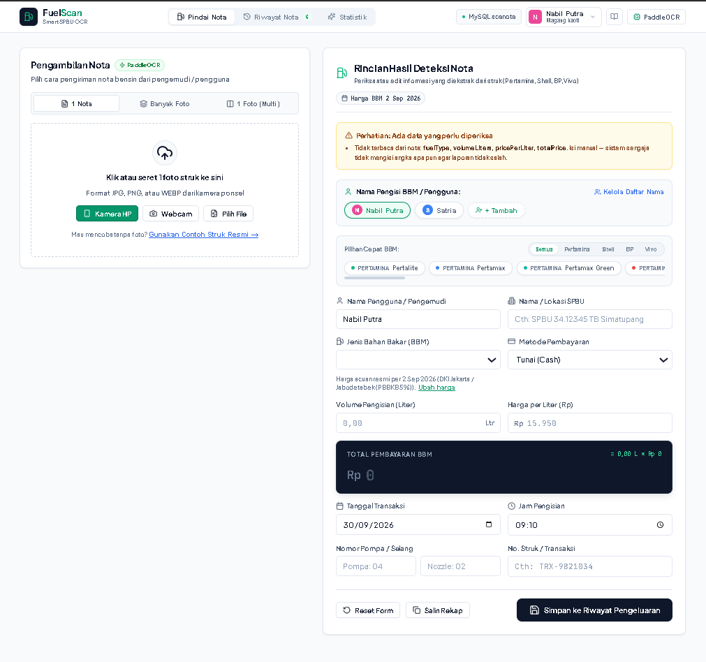
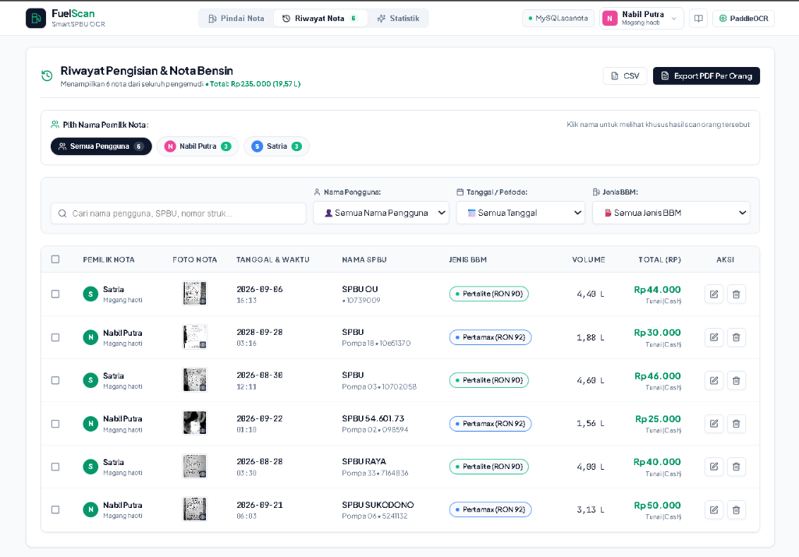
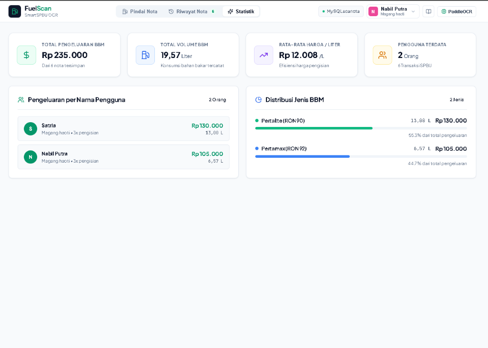

Aplikasi web cerdas FuelScan berbasis kecerdasan buatan (PaddleOCR) untuk otomatisasi pemindaian, ekstraksi teks nota struk SPBU (Pertamina, Shell, BP, Vivo), validasi safety-first, pencatatan multi-pengemudi ke database MySQL scanota, serta rekap analitik pengeluaran bahan bakar secara real-time.

OCR Scan Nota Bensin (FuelScan) hadir sebagai solusi modern untuk menuntaskan kendala operasional pencatatan pengeluaran bahan bakar kendaraan kantor/lapangan. Kertas struk kasir SPBU berbahan termal rentan pudar, hilang, atau kusut sehingga memicu selisih saat proses klaim atau reimbursement bulanan.
Melalui integrasi model computer vision PaddleOCR, sistem ini mampu mengekstraksi informasi penting secara presisi—meliputi nama/lokasi SPBU, nomor pompa/nozzle, jenis BBM (Pertalite, Pertamax, Dexlite, dsb.), volume liter, harga per liter, total pembayaran, serta nomor struk transaksi. Dilengkapi sistem verifikasi safety-first yang secara cerdas memberi peringatan jika terdapat karakter kabur agar laporan keuangan selalu akurat 100%.
Jelajahi alur lengkap aplikasi mulai dari pemindaian struk, manajemen riwayat pengisian, hingga dasbor analitik konsumsi BBM.
Menyediakan antarmuka capture serbaguna (Kamera HP, Webcam, dan Upload berkas) yang terhubung langsung dengan engine PaddleOCR. Hasil pembacaan otomatis mengisi form SPBU, tanggal, jam, pompa, nozzle, volume liter, dan harga acuan per liter secara presisi dengan sistem validasi safety-first.

Daftar tabel interaktif dari seluruh transaksi BBM yang dilengkapi thumbnail foto struk fisik asli, rincian SPBU, jenis BBM (Pertalite RON 90 / Pertamax RON 92), volume liter, dan total nominal. Tersedia fitur filter nama pengemudi, tanggal, serta export data format CSV dan PDF per orang.

Dasbor analitik cerdas yang menyajikan metrik kumulatif secara real-time: Total Pengeluaran BBM (Rp 235.000), Total Volume (19,57 L), Efisiensi Harga Rata-rata per Liter (Rp 12.008/L), perbandingan biaya per pengemudi, serta visualisasi progress bar distribusi jenis BBM.
Fokus pada kenyamanan pengemudi di lapangan dengan alur 3 langkah mudah: Pilih sumber foto → Ekstraksi teks otomatis → Simpan data ke riwayat. Form dilengkapi selector chip nama pengemudi (Nabil Putra, Satria) dan pilihan brand BBM resmi (Pertamina, Shell, BP, Vivo).
Semua nota yang telah dipindai tercatat rapi beserta bukti visual struk asli. Memudahkan bagian operasional kantor melakukan verifikasi pengeluaran BBM dengan fitur export instan ke CSV dan dokumen PDF per nama pengemudi.
Memberikan transparansi penuh terhadap anggaran operasional bahan bakar. Visualisasi distribusi jenis bahan bakar memperlihatkan konsumsi Pertalite RON 90 sebesar 55.3% dan Pertamax RON 92 sebesar 44.7% dari total 19,57 liter BBM yang terbeli.
Bagaimana teknologi AI memproses selembar struk SPBU menjadi data terstruktur dalam hitungan detik
Pengemudi mengambil foto nota SPBU via kamera ponsel, webcam, atau upload gambar.
Model OCR memproses binarisasi gambar dan mendeteksi koordinat teks (bounding boxes).
Sistem memetakan entitas (SPBU, liter, total Rp) serta memverifikasi keselamatan data.
Data tersimpan di MySQL scanota, masuk ke riwayat filterable, dan direkap ke dasbor statistik.
Penerapan OCR Scan Nota Bensin (FuelScan) mengubah proses manual yang memakan waktu menjadi sistem digital otomatis, paperless, dan bebas dari selisih nota operasional.